Codex
继续本机与 SSH 会话，保留模型、Skill、权限、计划和目标操作。官方账号与兼容 API 沿用原桌面工作环境。
开源 · 自托管 · V2.0 正式版
Codex、Claude Desktop、DeepSeek Harness 各司其职，你在手机上接着聊、查文件、看 Git、用终端。浏览器随开随用，Android 与 iOS App 随身接力。
代码开源，欢迎共建。觉得有用，欢迎前往 GitHub 点个 Star，也欢迎反馈问题、贡献代码。
任务仍在你的电脑或 SSH 主机上执行，执行端需保持在线。
从远程聊天，
到随身工作台。
01 / TRY IT
不必安装，先走一遍你的工作流程。点击设备里的按钮，也可以直接选择下方场景。
工作台与电脑网关使用 v2.0.0 产品界面和示例数据，手机首页为浏览器模拟。聊天回复、客户端状态、终端输出和 Git 操作均在本页模拟；不连接电脑、不调用模型、不读取或上传你的文件，刷新即重置。
THREE CLIENTS / ONE BRIDGE
扫描电脑中已安装的客户端，只启用需要的应用。底部切换或左右滑动聊天列表，各自的会话与项目互不混淆。

继续本机与 SSH 会话，保留模型、Skill、权限、计划和目标操作。官方账号与兼容 API 沿用原桌面工作环境。
Code 与 Cowork 分组展示，继续消息并回应支持的授权。自动接入支持 macOS、Windows；首次连接可能需要解锁电脑完成准备。
发现已安装的 Harness，沿用账号与工作目录，在同一个网关查看可用模型、推理选项及客户端提供的额度。
02 / THE WORKBENCH
v2.0.0 将聊天、文件与工具连成完整工作台。手机 Web、Android、iOS 和电脑浏览器共用会话，按屏幕宽度呈现。
打开目录、搜索文件，预览文本、Markdown 与图片。聊天附件可选择定位或下载，下载浮窗显示进度与速度；图片支持双指、滚轮缩放和拖动。
聊天下载上限可即时调整；文件标签页的主动下载不受此上限限制。
保留 cd 后的目录、环境变量和交互状态。采用用户实际登录 shell：macOS 通常为 zsh，Linux 通常为 bash，Windows 使用 COMSPEC。手机换行用于编写，点击发送才执行。
切换标签保留会话，关闭终端标签结束会话。
从增删差异到历史链路，在手机上审阅并暂存文件、填写提交说明。支持创建或切换本地分支、本地合并与中止合并。
不提供远程推送、历史重写或强制丢弃。
继承创建时的主聊天上下文。模型、思考程度、Skill、权限和附件一个不少；支持普通／计划模式、排队和补充任务。同一网关的多台设备共享这条临时会话。
结束或重启网关后清除；不进入原生侧边栏，暂不支持 SSH 工作区。
主聊天在左，文件、Git、终端或侧边聊天在右。拖动标签开启分屏，拖动分隔条调整比例；详情窗口可调节高度。窄屏和手机保持单栏。
会话区域宽度至少 720 px 时提供分屏；以实际可用空间为准。
在任务树里查看当前会话派生的子智能体，展开最近已保存的输入、回复和工具记录，不必离开主聊天。
当前为只读记录，不提供创建、发消息或停止子智能体。
03 / MADE FOR YOUR PHONE
扫码保存 Mac、Windows 或 Ubuntu 网关，回到电脑列表随时切换。应用图标显示未读角标，点击直达对应应用。
保存多台电脑及登录状态；电脑端可撤销设备。Web 支持记住登录，密码更新或凭证撤销后需重新验证。
点击直接复制，图片预览有关闭入口，附件调用系统保存。聊天列表支持下拉刷新，Android 首页连续两次返回可退出。
选择模型、思考程度、Skill 与权限，上传附件，普通／计划模式自由切换。Codex 主聊天保留目标模式，侧边聊天支持独立设置；其他客户端按自身能力提供选项。
中英文界面切换，聊天内容保持原样。设置里调整显示、图片缩略图，主动检查 App 更新；不会自动下载安装。
STAY IN THE LOOP
App 前台可同步任务提醒，通知可清空，点击可回到对应电脑和聊天。外部 Bark、ntfy、PushPlus 通道继续保留，支持的通知链接可跳回已保存的电脑。
查看执行、待回应和连接状态，点击回到聊天。不显示聊天正文；App 不活跃时可能显示最后已知状态。
标准手机 App 不保证后台或锁屏通知送达，灵动岛也不等于后台实时推送。04 / GET THE APPS
v2.0.0 · 网关与手机 App 配套使用
macOS、Windows，以及实验性 Ubuntu x64 / ARM64。Web 工作台由网关提供，浏览器打开地址即可。
电脑端下载 ↗下载 APK，按系统提示安装。已有预览版可覆盖安装，保留已保存的电脑。
下载 Android APK ↗IPA 需要用户自行签名后安装，也可下载 Xcode 工程，使用自己的 Apple 账号签名安装。尚无 App Store／TestFlight 版本，下载 IPA 不会直接安装。
手机 App 请搭配 v2.0.0 网关使用。升级前保留配置备份，相同端口只运行一个网关；iOS 仍需使用自己的 Apple 账号签名安装。
01 / WALKTHROUGH
从启动网关到跨设备继续聊天，跟着实际界面走一遍。
跟随 v1.3.0 界面，了解账号配置、额度查看、API 模型选择和电脑使用授权。演示中的账号与聊天均为示例数据。
02 / GET STARTED
先从局域网开始，再按需要配置外网入口。
在电脑安装并登录需要的客户端，再打开对应系统的 Codex Mobile Bridge。
在“客户端与接入”扫描并选择应用；保留局域网访问，保存后启动网关。
手机扫描“扫码登录”；另一台电脑可打开访问地址，使用网关凭据登录。
打开已有会话或新建聊天，查看进度、发送消息、回应支持的确认请求。
首次局域网使用无需 Python、Node.js 或部署 Agent。扫码负责登录，网络仍需可达；二维码为短期、一次性登录凭据。
ACCOUNTS & PROVIDERS
官方账号与自定义 API 统一管理。切换前先结束运行中的任务；Codex 会重启，手机网关保持在线。
03 / CAPABILITIES
从会话管理到阅读、确认和通知，按你的使用方式展开。
Codex 的成熟工作流继续保留，Claude 与 DeepSeek 按各自客户端能力提供对应操作。
能力沿用原客户端与主机配置。计划、目标、Skill、侧边聊天等支持范围随客户端而异；复杂 MCP 表单及部分特殊确认仍需桌面处理，云聊天尚未接入。
04 / THE INTERFACE
界面按浏览器宽度适配。点击截图放大，了解 v2.0.0 的操作界面。
05 / CONNECTIONS
多个入口可以同时启用，连接同一个电脑网关。
按实际网络选择局域网、临时 HTTPS 或固定入口。v2.0.0 新增 Tailscale 固定 HTTPS，也支持自有服务器与 SSH。
推荐个人快速接入：无需域名和服务器，配置最少、上手最快。网关与隧道进程持续运行且连接正常时，通常可以沿用当前地址；Cloudflare 不保证永久占用或持续可用。隧道重建导致地址变化后，启用“每次启动网关及入口变化时发送地址”并配置好通知渠道，即可接收新地址；送达时间取决于网络与通知服务。
进阶方案需要具备 DNS、HTTPS、SSH、服务器或 NAS 管理等相关知识。本文命令与配置仅供参考，不保证适合你的环境；执行前请自行核对、备份并取得必要授权。使用、修改或执行这些示例的风险由使用者自行承担。在适用法律允许的最大范围内，项目作者与贡献者不对由此造成的数据丢失、服务中断、安全事件、费用或其他损失承担责任；依法不得排除或限制的责任除外。
启动局域网访问，使用 App 显示的地址即可开始，无需额外域名。
安装包内置 cloudflared。启用临时连接并启动网关即可；地址可能变化，可配置入口变化通知，或使用固定 HTTPS 地址。
Tailscale 公网转发或中继链路可能经过境外节点，中国大陆直连可能较慢或超时；私有组网直连与公网 Funnel 的访问路径不同。
电脑安装并登录官方 Tailscale 客户端，在网关选择 Funnel 公网访问；手机和浏览器无需安装 Tailscale。HTTPS 证书由 Tailscale 管理，仍需网关登录或扫码配对。
保留设备身份和名称时，正常重启后地址不变。电脑需保持唤醒，网关需保持运行。Funnel 存在带宽限制，请用实际 Wi-Fi 和蜂窝网络验证，不能保证中国境内的低延迟。
只在私有网络内访问可选择 Serve，手机也需接入同一 Tailscale 网络；Funnel 提供公网 HTTPS 入口，无需手机安装 Tailscale。
Cloudflare Tunnel 的访问链路可能经过境外节点，中国大陆直连可能较慢或超时；稳定的代理线路可能改善访问体验，实际速度以当前网络为准。
域名在原注册商续费，DNS 托管到 Cloudflare；电脑、Codex 和网关需要保持在线。try2love.com 和 https://codex.try2love.com 仅用于配置演示，不代表可访问的演示站点，请替换成自己的域名。
在 Cloudflare 添加 try2love.com，复制分配的两条名称服务器（NS）。已有网站和邮箱时，先核对并保留原 DNS 记录。
在阿里云等注册商的域名管理中，把 DNS 服务器改为这两条 NS，等待 Cloudflare 显示 Active。域名仍在原注册商续费；后续解析在 Cloudflare 管理。
在 Cloudflare 的 Tunnels 中创建 Cloudflared 隧道，从连接器安装命令中复制 Tunnel Token。App 已内置程序，无需再执行安装命令；只复制 Token，不是整条命令或 API Key。
添加“固定域名 · Cloudflare Tunnel”，填写 https://codex.try2love.com 和 Token，启用、保存并启动网关。回到 Cloudflare 确认连接器已连接。
在隧道 Routes 中添加 Published application / 公开主机名：子域名 codex，域名 try2love.com，路径留空。服务类型选 HTTP，地址填 localhost:8787（端口与 App 一致）；保存后自动创建 DNS 记录。
在 Cloudflare 为网关子域名添加 HTTPS 重定向规则。打开 HTTP 地址应先跳到 HTTPS 再登录；具体字段见下方完整图解。
点击 App 的“检测固定入口”，再用电脑浏览器和手机蜂窝网络分别访问域名，验证登录、读取聊天和发送消息。Healthy 只代表隧道已连接，网页还需要实际验证。
找不到域名：检查 NS、Active 状态与 DNS 缓存。1033：检查隧道和 Token。502：检查本机网关、HTTP 服务类型和端口。无需把域名指向电脑 IP，也不需要 SSH 密码。
① 手动配置 DNS、HTTPS 与 SSH 转发权限；② 在 App 保存普通用户 SSH 配置并检查登录；③ 启动连接、检测固定入口。App 不接收 sudo 密码，不安装服务器软件。
复用现有域名和反向代理，可选 Docker 中间入口。NAS 提供访问路径，任务仍在原电脑或 SSH 主机执行。
扫码登录不会自动打通网络。固定 HTTPS 和 NAS 需要首次配置；使用期间保持电脑唤醒、所选客户端与网关运行。
06 / DOWNLOAD
v2.0.0 · 当前正式版
从 v1.4.0 到 v2.0.0：三客户端接入、完整文件与 Git 工作台、连续终端、分屏、手机 App、通知角标、图片缩放和 Tailscale 固定 HTTPS。
安装包内置网关运行时。按电脑的系统与芯片下载。
Mac 版未公证，首次打开可能需要手动允许；Windows 版未做证书签名。另提供完整 ZIP 与 Linux AppImage；Linux 需手动升级，Windows ARM 暂无专用安装包。
所有版本与 SHA-256 校验文件 ↗从 v1.4.0 升级：先备份配置，在“应用与维护 → 应用更新”检查更新，或安装新版安装包；完成后刷新网页并更新手机 App。Ubuntu 使用安装包手动升级。
不需要。网关使用独立登录；模型调用仍沿用原 Codex 会话的提供商和认证。官方登录、API 或自定义服务需先在原 App 中正常工作。
可以使用主流现代浏览器访问可达的网关地址。执行端 App 提供 macOS、Windows 和实验性 Ubuntu x64/ARM64 安装包；访问端不必使用相同系统。
不能。电脑需保持唤醒、联网，并运行桌面客户端 和网关。SSH 任务还需要对应主机与连接可用。
手机首次启动可申请通知权限，按设置接收请求与完成提醒；电脑列表按应用显示未处理数量。标准手机 App 以前台同步为主，后台、锁屏或退出后不保证送达；需要持续提醒时可配置 Bark、ntfy 或 PushPlus。
使用当前正式版或预览版并刷新网页，在 Bridge 桌面端“账号与接入”添加或导入配置，然后在桌面端或网页切换。先结束运行中的任务；切换会重启 Codex，Bridge 网关保持在线。
先核对 Release 的 SHA-256，再尝试从“系统设置 → 隐私与安全性”允许打开。详细步骤见使用说明中的首次打开章节。
复杂 MCP 表单、身份验证挑战和部分特殊请求仍需桌面处理。Claude 支持 Code 与 Cowork，普通 Chat 暂不支持；自动接入支持 macOS / Windows，首次初始化可能需要解锁与系统授权。Linux 仍为实验性支持。
在“应用更新”检查版本并按提示更新。旧版更新失败时，可手动安装新包并保留原数据目录。网络、登录、通知及兼容性说明见项目 README。
欢迎在 GitHub 点一个 ⭐ Star，让更多需要跨设备使用 Codex 的人发现这个项目。也欢迎通过 Issue 分享使用体验和改进建议。